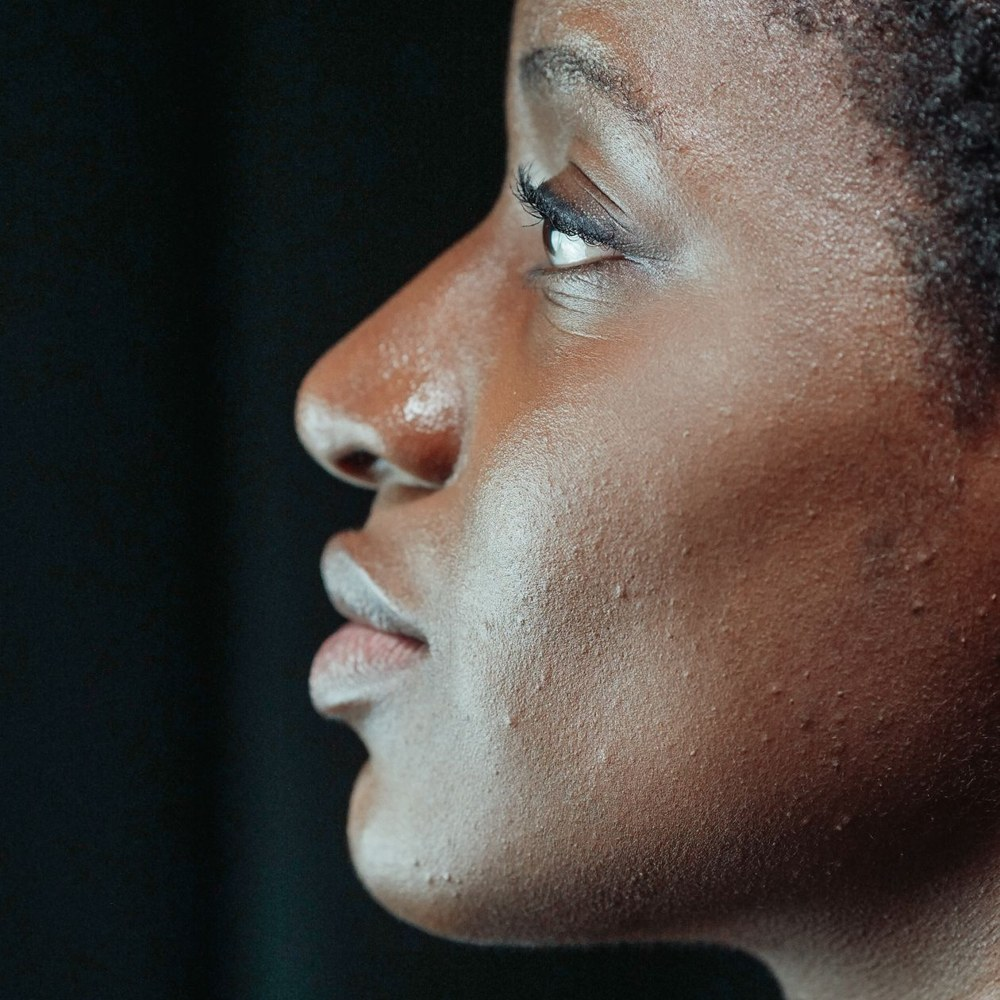

Recovery is the part of rhinoplasty patients think about most, and the part that rewards patience. If you are considering rhinoplasty surgery in islamabad, this is a realistic picture of how healing usually unfolds.
You will wear a nasal splint for roughly the first week. Congestion is normal, breathing through your mouth is common, and bruising around the eyes typically peaks around day two or three before it starts to fade. Sleep with your head elevated and follow your surgeon's cleaning instructions exactly.
The splint comes off around day seven to ten, and most people feel presentable enough for desk work and normal outings. The nose will still be swollen, especially at the tip, so the shape you see now is not the final shape.
Most visible swelling settles during this window. Light exercise is usually allowed again, but contact sports, heavy lifting and anything that risks a knock to the nose stay off the list. Glasses should not rest on the bridge until your surgeon clears it.
Deep swelling resolves gradually, tip definition sharpens, and numbness fades. The final result can take up to a year, which is why follow-up appointments matter even when everything feels fine.
General educational information only, not medical advice. Recovery timelines vary with the extent of surgery.